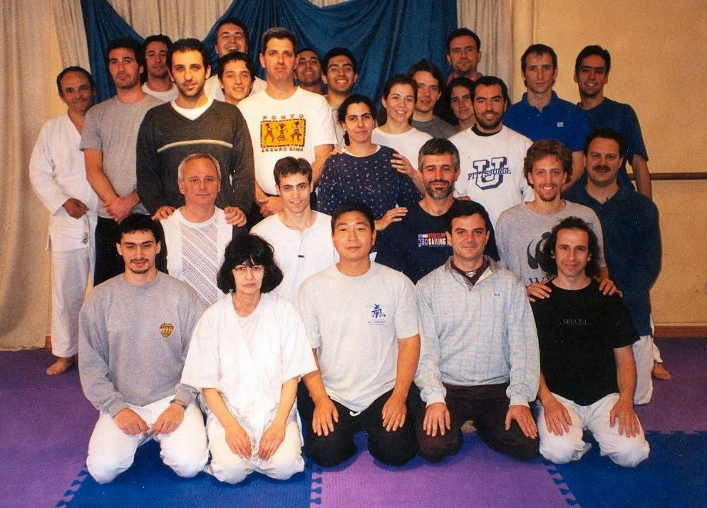
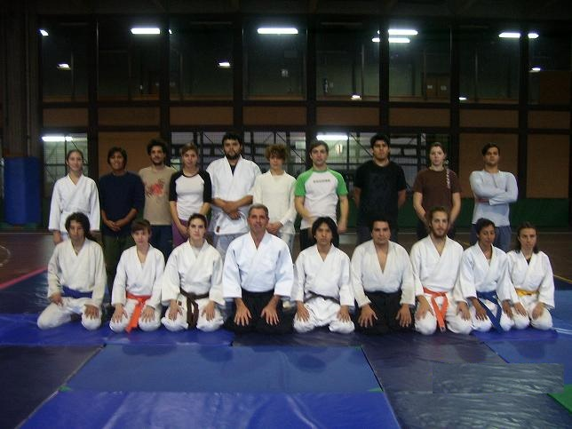

Historia de Ki Aikido Buenos Aires
Conociendo el Dojo de Dorrego (1991)
En Mayo de 1991 realicé mis primeras experiencias en el Ki Aikido con los profesores Ricardo y Cristina en el dojo de Dorrego, las cuales me asombraban en cada práctica haciéndome transitar por terrenos a los que nunca había accedido. Yo intuía, que en esa actividad había un tipo de conocimiento diferente, que se relacionaba más con el sentir, donde no tenía que pensar tanto y, al mismo tiempo, podía hacer ejercicio físico. Además aparecían nuevos elementos como los tests de Ki, las caídas que eran diferentes a las que yo había practicado en Judo a mis 9 años. También descubrí que se practicaba respiración y meditación. Estaba realmente motivado a continuar en el aprendizaje de esa nueva disciplina, confiando en que allí se encontrarían muchas de las respuestas que necesitaba para mi desarrollo personal.
Otra de las cosas que me motivaban a ir a la práctica con una continuidad casi perfecta, era el gran grupo de personas con las que me había encontrado en el Dojo, con quienes compartíamos la práctica en el tatami y divertidas bromas mientras nos cambiábamos antes y después de clase. El traje de artes marciales, el cual me resultaba algo muy extraño en principio, poco a poco se volvió un ritual familiar luego de algunos meses de práctica. Era realmente una época de grandes cambios y descubrimiento de una nueva forma de expresarse, de comprometerse y de compartir con los demás las experiencias de cada clase.
Primer seminario con Kenjiro Yoshigasaki Sensei (1993)
Poco a poco, comencé a entender que detrás del Dojo existía una escuela que lo avalaba. Por aquel entonces, dependíamos de la Ki No Kenkyukai, dirigida por Doshu Koichi Tohei, y su referente ante nosotros era el profesor Palacios, un gran maestro que si bien no estaba en todas las clases, tenía un alto nivel de conocimiento sobre el Ki Aikido, y nos brindaba, además de lo técnico, las experiencias de sus viajes a Japón y su contacto con los grandes maestros de ese país. Durante 1992, Ricardo Sensei, viajó a participar de un seminario a Tochigi - Japón, donde conoció a uno de eso grandes referentes del Ki Aikido: Yoshigasaki Sensei, a quien invitó a venir a la Argentina a brindar un seminario al año siguiente.
En setiembre de 1993 recibimos a Kenjiro Yoshigasaki Sensei en el dojo de Dorrego. La sensación que teníamos era de gran expectativa. Yo notaba que Sensei era un profesor de muy alto nivel, con una notable amabilidad, pero no era el tipo de maestro que consuela a los alumnos. Mas bien, se notaba una gran profundidad en sus explicaciones y era uno mismo el que debía investigar sobre el tema para realmente entender lo que el estaba queriendo decir. En lo personal, me sorprendían los temas que el abordaba, como que "el Ki era algo no claro", o la inclusión de la palabra "percepción" en sus clases. También explicaba las técnicas de una forma completamente diferente a lo que yo había visto hasta ese momento. Además de hablar en inglés, Sensei tocaba temas sobre historia, física y actualidad internacional entre otros, que luego de varios años de estudiar sus clases, pude entender por qué estaban relacionados con la práctica. En conclusión al terminar el seminario yo sentía que mi mundo, en lo que a Aikido se refería, había cambiado.
Mi primer graduación (5o Kyu)
En Noviembre de 1993, hice mi primer examen de 5o Kyu. y sentía que mi viaje en este interesante mundo de las artes marciales había comenzado. En Setiembre de 1994, volvimos a tener la oportunidad de tener la presencia de Yoshigasaki Sensei, pero esta vez, yo esperaba conocer algo más acerca de lo que había brindado el año anterior. Para mi sorpresa, el seminario tenía un carácter completamente diferente, y sensei abordaba tanto las técnicas como los temas que trataba desde un punto completamente diferente. Recuerdo haberle preguntado a sensei "Yokomenuchi Shihonage la hemos visto de maneras diferentes, cual de estas formas debo practicar ?". La respuesta de sensei fue clara "todas".
El dojo de Flores (1994 - 1996)
Durante aquel seminario rendí mi examen de 4o kyu con Yoshigasaki Sensei, y allí conocí también al profesor Adrian, con quien continué mi aprendizaje de Ki Aikido a partir de 1995 en el dojo de Flores, un pequeño y agradable espacio, donde además de aprender mucho, me permitió conocer un excelente grupo de compañeros como Santiago, Juan Pablo y Patricia, con quienes compartimos la práctica y a quienes recuerdo con mucho afecto.
Incluyendo el uso de la mente en la práctica de Aikido
Durante los años 1995 y 1996, seguí participando de los seminarios de Yoshigsaki Sensei, donde rendí los exámenes de 3er y 2o kyu respectivamente. Por aquel entonces había comenzado también a estudiar Yoga. En el seminario de 1996 recuerdo haberle preguntado a sensei Yoshigasaki, "usted habla de poner la mente amplia y poner la mente en la punta del bokken, cual de estas mentes tengo que usar ?", el me explicó que "hay dos mentes, una amplia y otra particular y que la particular estaba incluida en la amplia". Esta sola respuesta, volvió a cambiar toda mi mundo, ya que comencé durante todo el año siguiente a practicar, tratando de descubrir donde estaban este tipo de mente en cada una de las técnicas.
Dar clases en Dorrego (1997 - 1998)
Al finalizar 1996, el profesor Ricardo se había retirado del dojo de Dorrego, con lo cual Sensei Cristina, nos pidió a los estudiantes más avanzados si podíamos, junto a ella, brindar las clases a los alumnos del dojo. Así que con una escasa experiencia, tomamos las clases, estando obligados a partir de allí a estudiar aún mas fervientemente de los videos registrados en los seminarios anteriores, para poder dar clases acordes a lo que nos estaba enseñando el maestro Yoshigasaki. Recuerdo también, que habíamos abierto en el dojo de Dorrego, una clase de práctica para instructores, antes de comenzar con el dictado de la clase general. Durante el seminario 1997 obtuve la graduación de 1er kyu.

Compartiendo un Seminario con el grupo del Dojo de Dorrego
1er Dan y comienzo de un nuevo ciclo (1998)
Durante el seminario de 1998, rendí la graduación de primer dan con Sensei Yoshigasaki. Ese exámen, fué otro de los momentos que hicieron que mi práctica y aprendizaje del Aikido aumentaran mi nivel de compromiso con la actividad. En la foto estoy con Sensei Yoshigasaki durante el desarrollo de una técnica.

Seminario con Doshu (1998)
Apertura de Ki Aikido Buenos Aires en Ciudad Universitaria (1999)
1999 fue otro año donde tuve que dar un paso aún mayor en mi desarrollo del Ki Aikido, abriendo mi propio dojo, ya que el dojo de Dorrego estaba teniendo problemas edilicios. Llevé mi propuesta a la Facultad de Ciencias Exactas y Naturales en Ciudad Universitaria y ellos se mostraron muy gustosos de incluir la actividad, cuando les conté de que se trataba el Ki Aikido. En Abril de 1999, dí mi primer clase en ese Dojo con grandes expectativas de como lograría desarrollar la actividad en ese lugar, sin saber que años después íbamos a tener formado un gran grupo como el que hoy en día funciona en Ki Aikido Buenos Aires. Por aquel entonces, brindaba clases mientras aprendía tomando seminarios con Sensei Yoshigasaki durante los años 1999, 2000, 2001 y 2002. En este último, el cual Doshu nos anunció por un lado que había decidido crear su propia organización (la Ki No Kenkyukai International) y por otro que a partir del seminario siguiente iba a mandar a otro profesor, para que siguiera con su trabajo en la Argentina.

Comienzo de Ki Aikido Buenos Aires (1999)
Primer Seminario con Shihan Giuseppe Ruglioni (2003)
En 2003, teníamos gran expectativa por el profesor que estaba a punto de llegar. Cuando Ruglioni Sensei vino a Buenos Aires en Setiembre de ese año para darnos nuestro acostumbrado seminario anual, nos dimos cuenta, que gran maestro era, ya que el, si bien no tenía el estilo de Sensei Yoshigaski, contaba con un gran nivel técnico y además brindaba las explicaciones de forma tal, que facilitaba nuestro aprendizaje. Yo noté que todo lo que había estudiado para entender las clases que había brindado el Doshu, se aclaraba en gran proporción, con las enseñanzas de Beppe Sensei. Por otra parte, su amabilidad y entendimiento de las situaciones por las que estábamos pasando, nos ayudaba a que esta escuela se pudiera desarrollar en Buenos Aires. Entre los años 2003 a 2006 el seminario se realizó en Ayem, dojo que habían abierto Carlos, Alfredo y Diego, luego del cierre del dojo de Dorrego.
Durante el año 2006, Ruglioni Sensei, me solicitó si podía organizar el seminario 2007 en Ciudad Universitaria, debido a que el espacio en el dojo Ayem no era el suficiente para desarrollar un seminario internacional. Lo comenté en la Facultad de Ciencias Exactas y Naturales y ellos estuvieron de acuerdo en realizarlo. En adelante, realizamos los seminarios, en el dojo Ki Aikido Buenos Aires. En la foto, se ve el grupo de Ki Aikido Buenos Aires por el año 2009.

Grupo Ki Aikido Buenos Aires (2009).
Continuamos teniendo seminarios con Sensei Ruglioni mientras en Ki Aikido Buenos Aires practicabamos lo que aprendíamos en cada uno de los seminarios.

Con Shihan Giussepe Ruglioni en Seminario Ki Aikido Buenos Aires (2013)
En Febrero de 2016 tuvimos la mala noticia del fallecimiento de Sensei Ruglioni por lo que ese mismo año tuvimos nuevamente la presencia de Doshu Yoshigasaki brindando el seminario y nuestro grupo en Ki Aikido Buenos Aires seguía evolucionando.
Doshu Yoshigasaki vuelve a dar un seminario en Argentina (2016)
Con Doshu durante el Seminario 2016.

Grupo Ki Aikido Buenos Aires (2016).
Primer Seminario con Sensei Holm (2017)
En 2017 Sensei Holm comenzó a brindar los seminarios en Ki Aikido Buenos Aires. A partir de ese momento contamos con sus conocimientos y amabilidad para actualizar nuestras técnicas.
Con Sensei Holm durante el Seminario 2018.
Ki Aikido Buenos Aires, es un espacio que desarrollo desde 1999 y tiene como objetivo, compartir todas estas enseñanzas recibidas de grandes maestros. Estamos apoyados también por la Ki No Kenkyukai International y por la Facultad de Ciencias Exactas y Naturales, instituciones por las que tengo un profundo agradecimiento. Colaboran además los alumnos de la clase con un gran nivel de compromiso. El dojo está abierto a recibir nuevos integrantes que estén interesados en compartir un ámbito amable, de trabajo serio y experiencias alegres, donde podamos evolucionar como seres humanos, al tiempo que aprendemos sobre artes marciales. En el año 1991 comencé una búsqueda, que me trajo hasta aquí, y me siento muy feliz y orgulloso de haber logrado, junto a gente que aprecio mucho, un lugar donde practicar. Sé que hay mucho por hacer, mucho para aprender y mucho para compartir y siento que este es el lugar para hacerlo. Los invito a participar de este mundo de las artes marciales, que se vuelve mas y mas interesante con el correr del tiempo.

Grupo Ki Aikido Buenos Aires (2019)
Podés hacer consultas por Whatsapp

Inscribite para participar de la clase.

Tomá clases por Zoom

Consultá días y horarios de las clases.
Conocé al Profesor

Te explicamos como son las clases

Libres, Gratuitas y Abiertas a toda la Comunidad en Ciudad Universitaria

Técnicas para la salud (Kenkodo).

Participá del Grupo en Facebook


Podés consultar sobre la práctica

norbertokiman@hotmail.com

"Apto para Realizar Actividad Física".
Que días y horario son las Clases?

Martes de 18:00 a 20:00 horas
Sábados de 16:00 a 18:00 horas
Donde se practica?

Facultad de Ciencias Exactas
y Naturales
Pabellón II - 1er. Piso
Gimnasio Pommies
(al lado de la biblioteca)
Ciudad Universitaria


Curso de Ki Aikido por Internet.

Consultas por teléfono al Depto. de Deportes

5285-8154/5285-7400